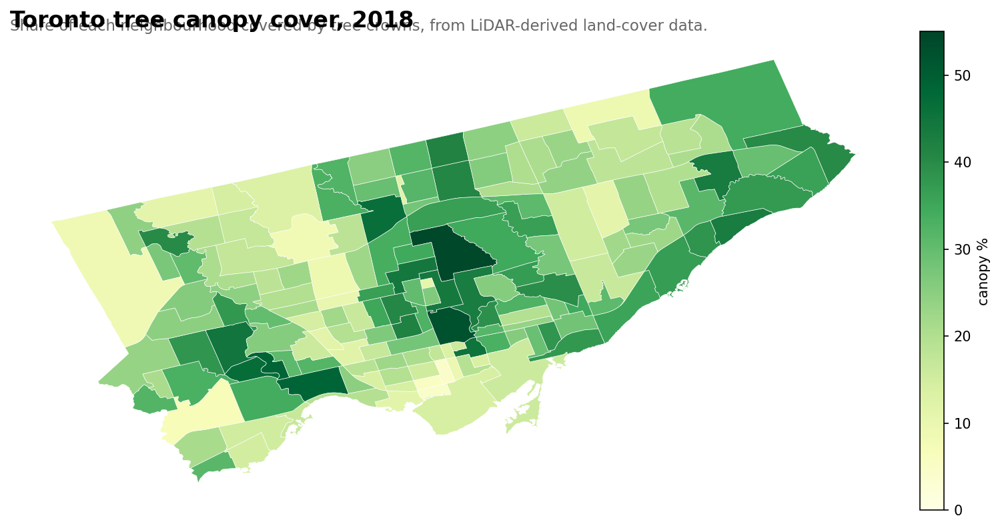
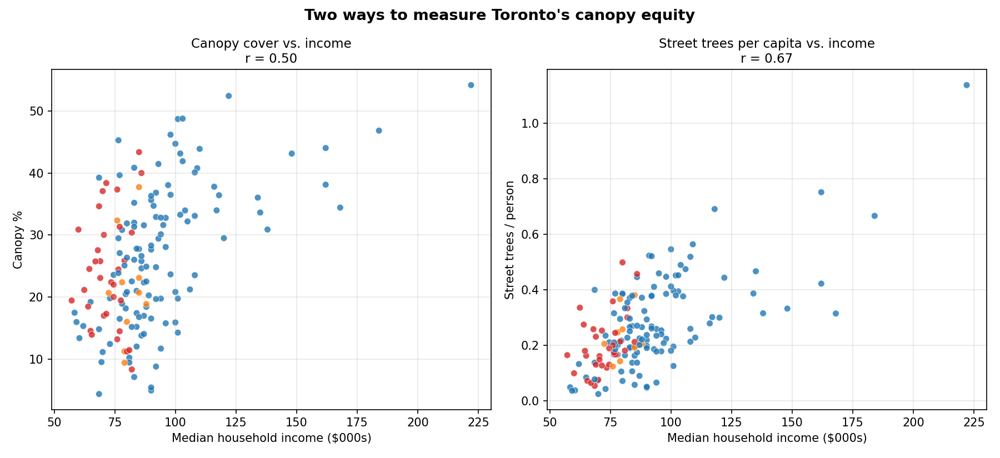
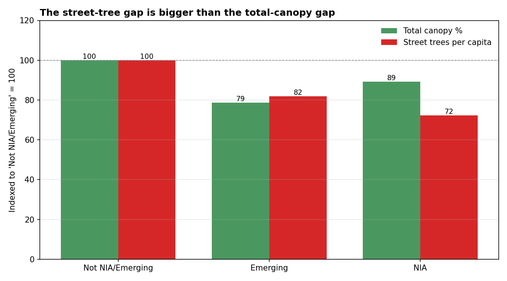

April 2026 · revisiting canopy equity with LiDAR land-cover data
Beyond the curb — Toronto's actual canopy, and where the equity gap really lives
In an earlier post I looked at canopy equity using the city's street-tree inventory — the trees on the boulevard between your sidewalk and the road. There was a strong correlation between income and street-trees-per-capita (r = 0.67), and a 28% gap between Neighbourhood Improvement Areas and the rest of the city.
A fair critique of that analysis: the inventory only covers trees the city owns on road allowances. It leaves out parks, ravines, institutional grounds, and — the big one — private property. In most Toronto neighbourhoods that's where the majority of actual tree cover lives.
Toronto publishes a 2018 land-cover study, derived from LiDAR and aerial imagery, that classifies every square metre of the city into one of eight categories: tree canopy, shrub, grass, bare earth, water, buildings, roads, other paved. Summed over a neighbourhood, it gives you the actual percent of the ground shaded by tree crowns from above — not what the city planted, but what's growing.
Here it is:

Citywide canopy cover in 2018: 25.9%. The City of Toronto's Strategic Forest Management Plan targets 40% by 2050. We're two-thirds of the way there.
Top and bottom
Most canopy
Canopy %
Least canopy
Canopy %
Bridle Path-Sunnybrook-York Mills
54.2
Yonge-Bay Corridor
4.3
Rosedale-Moore Park
52.5
Harbourfront-CityPlace
4.9
Lambton Baby Point
48.8
Wellington Place
5.4
High Park-Swansea
48.7
Etobicoke City Centre
7.1
Kingsway South
46.9
Downsview
8.3
Lansing-Westgate
46.2
West Humber-Clairville
8.8
Cabbagetown-South St. James Town
45.3
Yorkdale-Glen Park
9.4
Edenbridge-Humber Valley
44.7
Milliken
9.4
Lawrence Park South
44.1
Downtown Yonge East
9.5
Mount Pleasant East
43.9
Briar Hill-Belgravia
10.2
A few notable patterns:
Ravine adjacency dominates the top. Bridle Path (the Don Valley), Rosedale-Moore Park (Rosedale Ravine), Lambton Baby Point (Humber River), High Park-Swansea (High Park itself). If there's a ravine next door, you have canopy.
High-rise cores dominate the bottom. Yonge-Bay Corridor, Harbourfront-CityPlace, Wellington Place — the new condo core is essentially treeless from above.
Cabbagetown at 45% is a genuine surprise. Victorian-era single-family streets, backyard mature canopies, and a sliver of Riverdale Park adjacent. It's a middle-income canopy standout, $76k median vs. Rosedale's $122k.
Downsview at 8% is the lowest NIA. The former airbase is still mostly grassland and runway paths — its "green" colour on maps is grass, not trees.
The equity re-read
Here's the key comparison. On the left: canopy cover vs. income. On the right: street trees per capita vs. income. Same neighbourhoods, same income data, different tree metrics.

Two ways to measure canopy equity against income. The canopy metric (left) is broader — it includes all trees, public and private. Street trees per capita (right) only counts what the city plants on public boulevards.
Both relationships are real. But they're not the same strength.
Total canopy vs. income: r = 0.50
Street trees per capita vs. income: r = 0.67
The street-tree relationship is tighter than the total-canopy relationship. Which is the opposite of what you might expect — you'd assume the "bigger" measure (all trees everywhere) would show a stronger income relationship, because wealthy homeowners with big backyards plant trees.
They do. But the city plants even more trees in front of their houses.
The street-tree gap is bigger than the total-canopy gap
Indexed to "Not NIA or Emerging" neighbourhoods = 100:

The canopy equity gap vs. the street-tree equity gap, between Neighbourhood Improvement Areas and the rest of the city.
NIAs have 11% less total canopy than non-NIAs. But they have 28% fewer street trees per capita. The public-land gap is about 2.5× larger than the private-land gap.
The implication: if you're trying to close Toronto's canopy-equity gap, the leverage point is public land — the boulevards, parks, and institutional grounds the city directly plants. Those are where the gap is disproportionately concentrated. Private-property canopy already partially compensates. The city is the gap.
This is a genuinely different equity framing than "tree equity" as it's usually discussed. A standard canopy analysis — the kind i-Tree studies and most municipal forestry reports do — would conclude Toronto has modest canopy inequity (which, at r = 0.50, it does). The policy-relevant framing is narrower: on the land the city directly controls, it plants markedly fewer trees per resident in low-income neighbourhoods. That's a tractable problem.
One more way to see it: for every 1,000 m² of actual tree canopy in a neighbourhood, how many street trees does the city maintain?
Classification
Street trees per 1,000 m² canopy
Not NIA or Emerging
4.2
Emerging
5.4
NIA
3.7
Emerging neighbourhoods are actually above the non-NIA average on this — they're mostly newer suburbs where the city's street-tree program has rolled out but the private canopy hasn't matured yet. NIAs are 12% below average: their canopy is more dependent on non-city sources (yards, parks, ravines) than the wealthy-neighbourhood canopy is. If anything were to happen to those non-city sources — infill development, institutional land changes — the damage would land hardest where the city's street-tree cushion is thinnest.
Caveats
The 2018 land-cover data classifies "tree canopy" as woody-plant tree-form cover. Shrub is a separate class. Including shrub would bump city-wide cover from 25.9% to about 27.8%. I used tree-only to match how municipal reports usually state canopy.
Neighbourhood boundaries are the 158-model (current). The 2018 data is already dissolved by neighbourhood in the geodatabase — no spatial re-joining was needed on my end.
Correlation isn't causation. High-income neighbourhoods often have older tree stock, more backyard space, and ravine proximity, all of which compound. Separating the contributions is another analysis.
What comes next
Toronto also publishes a 2008 land-cover study using the same classification scheme. Diffing 2008 → 2018 would show which neighbourhoods gained canopy and which lost it over a decade that included the emerald ash borer devastation. I'll write that one next.